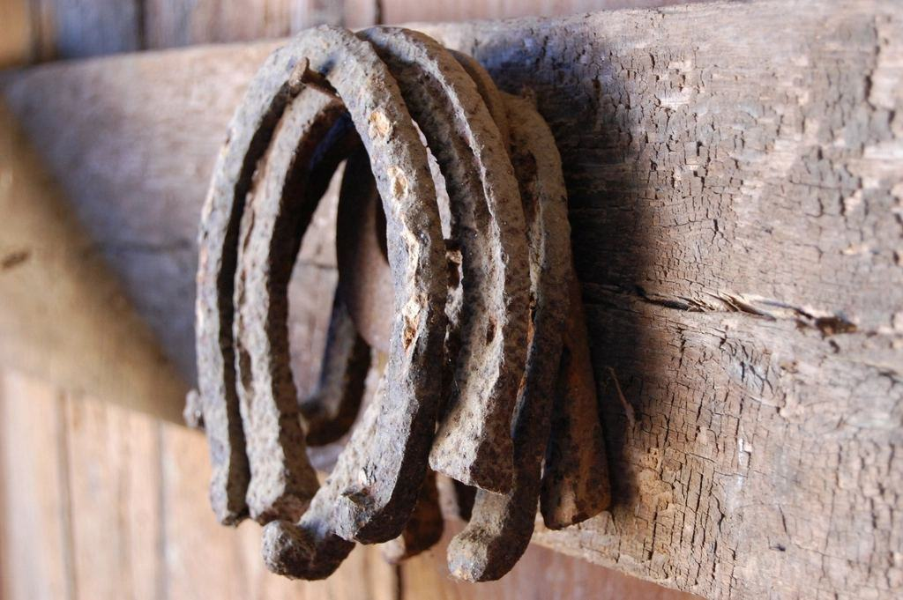
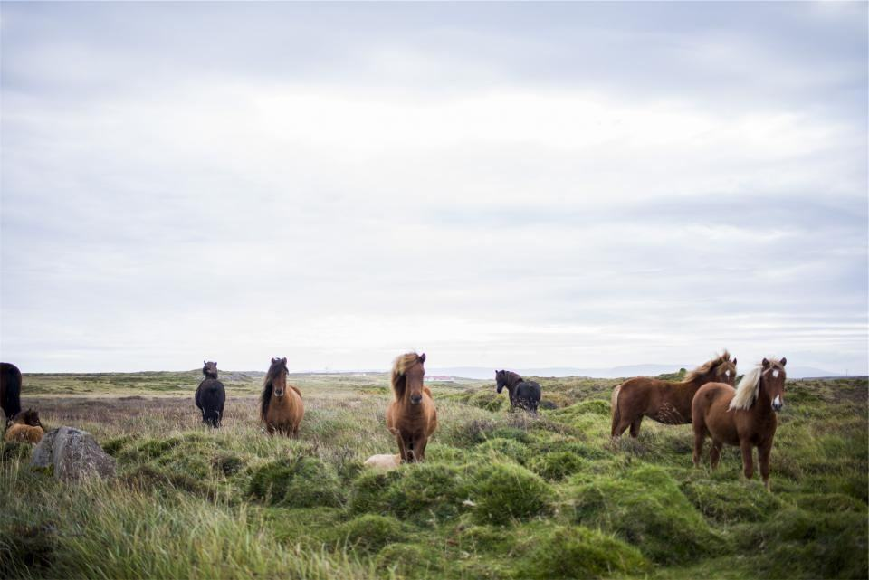
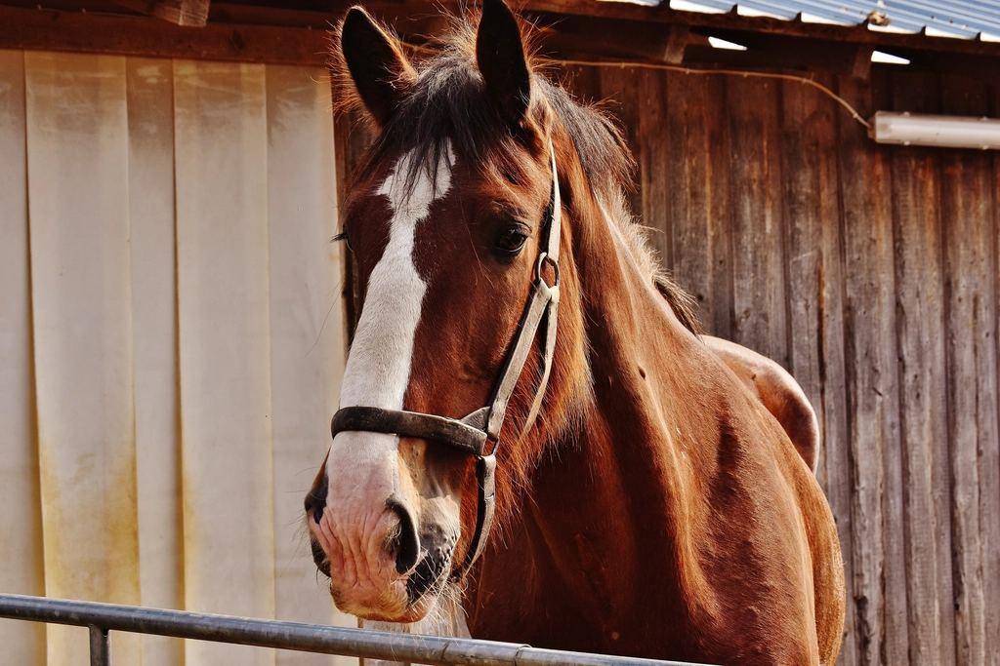
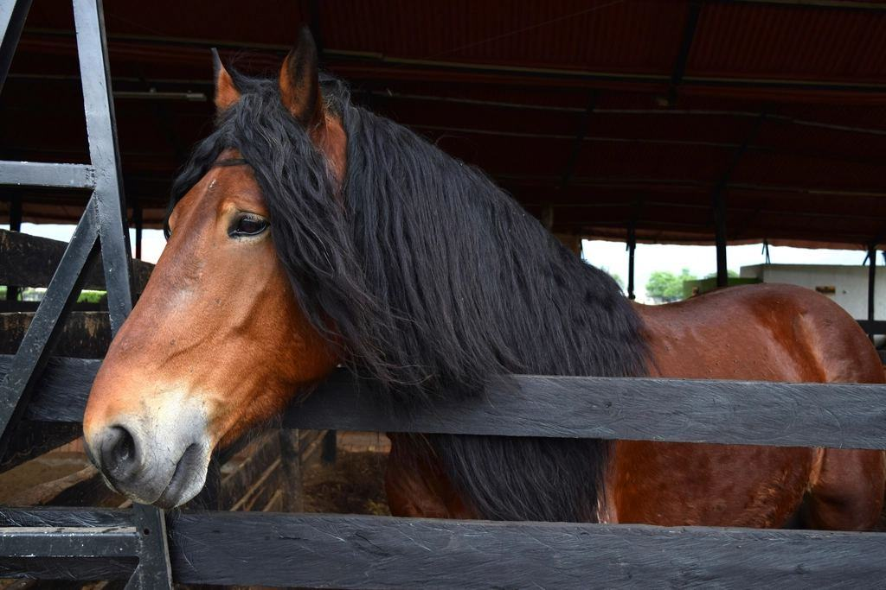
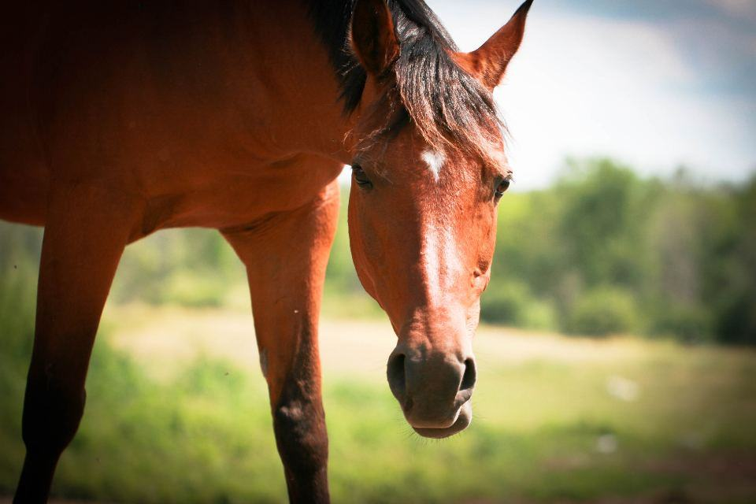
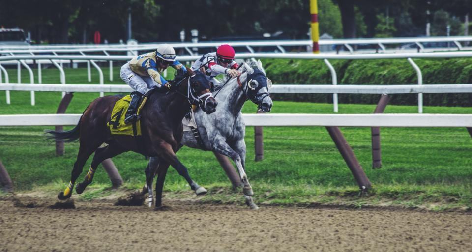

Vilken häst gäller det?
- 01
Varmskoning
Skon formas varm mot hoven i gasolässjan i bilen för en tät och jämn passform.
Läs mer - 02
Trav vid Axevalla
Stål, aluminium eller barfota bak – vi skor efter tränarens plan och banans underlag.
Läs mer - 03
Verkning av barfotahästar
Barfotahästar och unghästar verkas var sjätte till åttonde vecka.
Läs mer - 04
Stödskor på remiss
Stödskor, ägghälsskor och kilskor efter remiss från hästens veterinär.
Läs mer - 05
Handsmidda skor
Smedjan smider specialskor till nordsvenskar och brukshästar på beställning.
Läs mer - 06
Ponny och unghäst
Första verkningen tar vi i lugn takt, gärna med en vuxen häst bredvid.
Läs mer - 07
Prislista
Fasta priser per skoning, resa inom Skara kommun ingår.
Läs mer - 08
Boka hovslagare
Ring kontoret vardagar 7–9 så får du en tid inom två veckor.
Läs mer
Stall som litar på smedjan

SkolfastigheterRidskolan Valle Härad
 Uppdragsgivare
UppdragsgivareStall Brunsbo Trav

UppdragsgivareKinnekulle Ryttargård
 Uppdragsgivare
UppdragsgivareArdala Gårdsstall
 Uppdragsgivare
UppdragsgivareHornborga Ponnyklubb

UppdragsgivareVarnhems Islandshästar
 Skolfastigheter
SkolfastigheterNaturbruksskolan Ekedal
 Uppdragsgivare
UppdragsgivareStall Mössebergs Trav
Illustrationsbilder
Ryggar och hästar ska hålla ett helt yrkesliv
Hovslageri är ett av de tyngsta yrkena som finns. Alla bilar har hydrauliskt hovstöd och höj- och sänkbart städ, och varje hovslagare har fyra timmar betald fysioterapi per kvartal.

- 010arbetsrelaterade sjukskrivningar 2025
- 026–8 vfast intervall för varje häst
- 03100 %av utslitna skor går till skrot i Skara
Det hästägare frågar oss
- Illustrationsbild

- Fråga 01
Hur ofta behöver min häst skos om?
De flesta hästar skos om var sjätte till åttonde vecka. Unghästar och hästar med ortopediska skor ofta tätare.
- Fråga 02
Kör ni utanför Skara kommun?
Ja, i hela Skaraborg. Utanför Skara kommun tillkommer en reseavgift på 150 kr per besök, delad på alla hästar i stallet.
- Fråga 03
Måste jag vara på plats?
Första gången vill vi att du är där. Sedan räcker det att hästen står inne, torr och med en grimma på.
Hittar du inte svaret? Ring eller mejla oss.
070-174 06 31Boka hovslagare- Fråga 04
Vad händer om hästen tappar en sko?
Ring kontoret före klockan 9 så försöker vi lägga in hästen samma dag. Tävlingsdagar på Axevalla finns en hovslagare vid banan.

- Fråga 05
Skor ni efter veterinärens remiss?
Ja. Skicka remissen och röntgenbilderna i förväg, så tar Per eller någon av de äldre hovslagarna besöket.
Fyra lag i samma familjeföretag
- 01TravlagetAxevalla och SkaraTravlagetTravlaget arbetar tidiga morgnar i träningsstallarna runt banan och är på plats vid tävlingsdagar för akuta skobyten.Läs mer

- 02RidhästlagetRidskolor och privatstallRidhästlagetFem hovslagare som delar Skaraborg i fem områden, så att varje stall får samma person år efter år.Läs mer

- 03SmedjanBrunsbovägen, SkaraSmedjanEn smed som enbart arbetar i verkstaden med specialskor, svetsning och underhåll av bilarnas utrustning.Läs mer

- 04LärlingarnaTvåårig utbildningLärlingarnaTvå lärlingar går bredvid en erfaren hovslagare i två år fram till gesällprovet.Läs mer

Nytt från smedjan
- 01

Smedjan fyller 65 år
I maj firade vi med öppet hus, smidesuppvisning och kaffe för de tränare som varit kunder sedan Gustavs tid.
Läs mer - 02

Ny hovslagare i Falköping
Ella Johansson klarade gesällprovet i somras och tar över ridhästområdet söder om Mösseberg.
Läs mer - 03

Rotationsfallet som gick hem
En sjuårig valack med akut fång är tillbaka i lätt ridning efter fem skoningar i samarbete med veterinären.
Läs mer
Stall vi har skott åt länge
- Utfört

Ridskolan Valle Härad
Trettiotvå skolhästar på sexveckorsschema med samma två hovslagare sedan 2019.
- Utfört

Stall Brunsbo Trav
Tjugoåtta hästar i träning, skoningsplan synkad mot startlistorna på Axevalla.
- Utfört

Fångvalacken Tindra
Fem skoningar med ägghälsskor och lutad tå efter röntgen, nu i lätt ridning.
- Utfört

Ardala Gårdsstall
Handsmidda breda skor med svetsade broddar till fyra körhästar i skogsbruk.
- Utfört

Hornborga Ponnyklubb
Verkning av arton ponnyer vid två fasta tillfällen per säsong.
- Utfört

Kinnekulle Ryttargård
Hoppstall med elva hästar, ny hovslagare och veckovisa kontroller under utomhussäsongen.
Senaste från Bergsten

Vinterbroddar – boka i god tid
Från november gör vi broddhål på alla skor som läggs på, men tiderna fylls snabbt.
Läs mer
Ella Johansson är gesäll
Vår lärling sedan 2024 klarade gesällprovet med högsta betyg i smide.
Läs mer
65 år vid samma ässja
Bilder och berättelser från öppet hus i smedjan på Brunsbovägen.
Läs mer
Gesäller, mästare och försäkrade
 01
01Gesällbrev i hovslageri
Alla nio hovslagare har avlagt gesällprov enligt Sveriges Hovslagareförbunds krav.
 02
02Mästarbrev
Per Bergsten har mästarbrev i hovslageri sedan 2014.
 03
03Sveriges Hovslagareförbund
Medlemmar sedan 1972 och deltar i förbundets fortbildningsdagar varje år.

04Ansvarsförsäkring
Ansvars- och verksamhetsförsäkring som täcker skador på häst vid skoning.
Vilken häst ska skos?
Fyll i formuläret så hör vi av oss inom en arbetsdag.

ÖppettiderKontoret: mån–fre 7–9 och 15–16